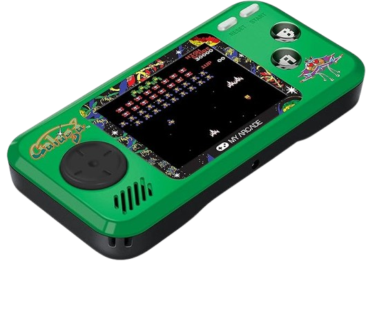

🏆 Notre Top 3 des Meilleures Consoles Rétro Portables
🥇 CHOIX PREMIUM

AYANEO Pocket DMG
- ✓ Écran OLED 3,92" sublime
- ✓ Snapdragon G3x Gen 2
- ✓ 8GB RAM / 128GB stockage
- ✓ Émulation jusqu'à PS2/GameCube
510,95€
Voir sur Amazon →
🥈 MEILLEUR RAPPORT Q/P

Console R36S 128 Go
- ✓ 40 000+ jeux préchargés
- ✓ Écran IPS 3,5" HD
- ✓ 30+ émulateurs inclus
- ✓ Batterie 10h d'autonomie
59,99€
Voir sur Amazon →
🥉 MEILLEUR PRIX

My Arcade Pocket Player Galaga
- ✓ 3 jeux Galaga officiels
- ✓ Écran couleur 2,75"
- ✓ Format Pocket ergonomique
- ✓ Prise casque 3.5mm
~45€
Voir sur Amazon →